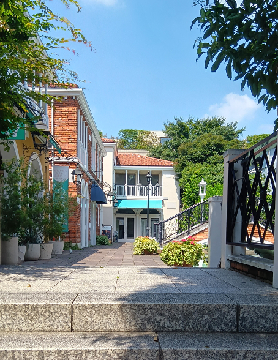

ラ・ヴィータ
自由が丘
Italy/イタリア
中央に位置するアーチ型の橋が、イタリア・ヴェネツィアらしさを象徴。
建物と建物の間にある細道は、日本であることを忘れてしまうほどの没入感がある。

自由が丘のおしゃれな街並みから歩いていくと、突如現れる異国情緒。
ラ・ヴィータ
自由が丘
Italy/イタリア
中央に位置するアーチ型の橋が、イタリア・ヴェネツィアらしさを象徴。
建物と建物の間にある細道は、日本であることを忘れてしまうほどの没入感がある。
自由が丘のおしゃれな街並みから歩いていくと、突如現れる異国情緒。
店名 / FONDA DE LA MADRUGADA
住所 / 150-0001 東京都渋谷区神宮前2-33-12 ビラビアンカB1
アクセス / JR原宿駅徒歩7分
TEL / 03-5410-6288
営業時間 / 16:00~23:30
定休日 / 1月1日、不定休日あり
平均予算 / 3000~5000円程度
公式HP / https://fonda-tokyo.com/
公式instagram / @fonda_de_la_madrugada